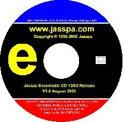
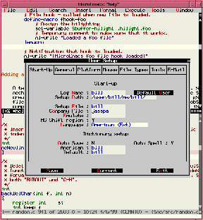

|
Welcome to www.jasspa.com, the web site for the distribution of JASSPA's MicroEmacs. This site first appeared on-line on 12th January 2000. |
|||
|
Jasspa's MicroEmacs is an Emacs editor biased towards
UNIX users, working across platforms by providing a
consistent interface under UNIX, Microsoft Windows
3.1/'95/'98/NT/2K/XP and DOS operating systems. |
Sept 2006 (2006.09) is the latest stable release.
You can download the source and/or binaries from this site.  ISO9660 CD-R images available. Leading Edge this is the very latest development snapshot.
We do not guarantee the reliability of the latest development snapshot but it will
generally be stable if it has been made available. |
||
|
|
|||
|
Jasspa's MicroEmacs now licensed under GPL. As of January 2002 Jasspa's MicroEmacs is distributed under the GNU General Public License (GPL). Special thanks to Danial M. Lawrence, the original author and copyright holder of MicroEmacs, for granting us permission to change the licensing terms of our distribution. NanoEmacs, a minimal version of JASSPA's MicroEmacs is
now available in the latest release. |
 | ||
|
|||
 |
![[On-line help]](images/onlinehlp.gif)